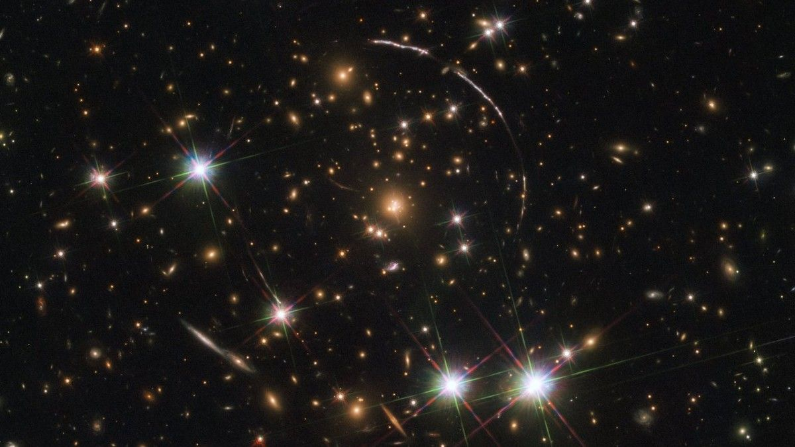
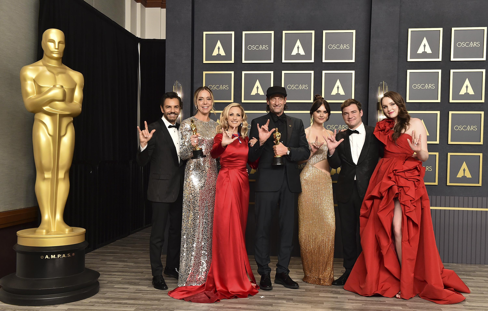

In the news  Earendel, the farthest known star, is discovered.  CODA wins Best Picture at the Academy Awards. Labour Party wins most seats in Maltese election.
On this day 1867 Alaska is purchased from Russia for $7.2 million. 1870 Texas is readmitted to the US following Reconstruction. 1853 Vincent Van Gogh, Dutch- French painter, is born. 1945 WWII: Soviet forces invade Austria. 1867 Alaska is purchased from Russia for $7.2 million. 1968 Celine Dion, Canadian singer, is born. 1990 Thomas Rhett, country music singer, is born. 2002 Queen Elizabeth The Queen Mother dies. 2020 Bill Withers, American singer, dies.
Featured Images Heart Nebula “When We All Believe” by Rose O’Neil “Migrant Mother” by Dorothea Lange Panorama of Gowanus Canal in Brooklyn, New York